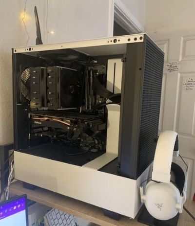
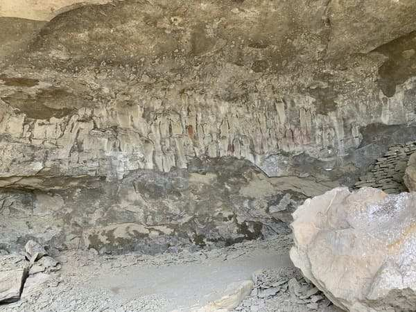

As a computer repair technician, I have to look at all components of a motherboard to see if any components are broken. Can you find the bent pin in this processor socket?

My custom PC with an i5-12600K, Radeon RX 6700 XT, 16 GB DDR4 RAM, and over 4 TB of storage. I use it to program and play video games.At Texas A&M University, I took CSCE 313 - Introduction to Computer Systems, where I learned how to utilize multithreading to send packets between clients and servers more efficiently.At Texas A&M University, I also took CSCE 315 - Programming Studio, where I designed a website utilizing APIs to generate video game recommendations.At Texas A&M University, I learned how to use R in multiple statistics classes. This is a scatterplot of Francis Galton's famous dataset exploring the relationship between heights of fathers and sons. The red line is the average height of the sons, the blue line is the prediction value from linear regression, and the green line is x+1.I used to work at the Memorial Student Center L.T. Jordan Institute for International Awareness, where I developed my skills in graphic design. These are two newspaper advertisements for our programs I designed in Adobe Illustrator.My grandmother taught me to sew when I was 7, and I love to design costumes in memory of her. This is an in-progress look at a bodice I made.My completed costume for the Texas Renaissance Festival.I love to watch my favorite baseball team, the Texas Rangers, play at their home stadium Globe Life Field in Arlington, TX.My family loves to travel to historical places. In 2019, we were able to travel to Washington, D.C. and see the old Supreme Court chambers.

In August 2023, I stopped by the pictograph cave in Billings, MT on a family vacation. Some of the rock art is over 2,000 years old.One of my favorite things about traveling is trying new foods! My boyfriend and I ate tacos, churro s'mores, and more at the Tacos y Tamales Festival in Chicago, Il this summer.